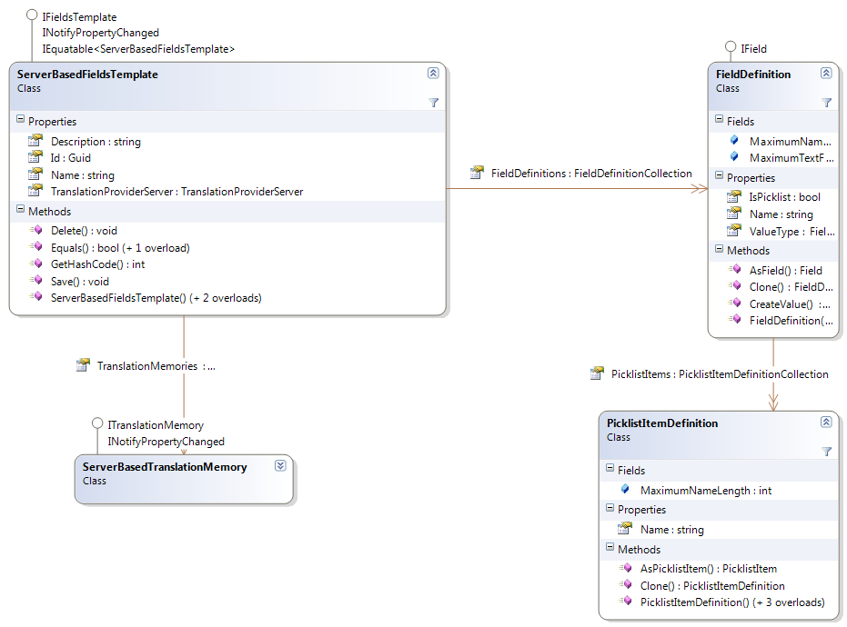

Working with Field Templates
This section describes how to work with field templates in order to centralize the management of server-based translation memory field definitions.
Overview
Just like any other translation memory, server-based translation memories support adding custom field definitions, which allow associating metadata with translation units that can be used for filtering. For more information, see Working with Field Definitions.
When managing a large number of translation memories it becomes tedious to have to manage the field definitions of each translation memory individually. For this reason, instead of defining field definitions for every translation memory individually, server-based translation memories can inherit their field defintions from a fields template, which is essentially a named collection of field definitions. Any change to the field template is automatically propagated to all the translation memories that are linked to the fields template.
Field templates are represented by the ServerBasedFieldsTemplate class. In order to create a field template, create a new ServerBasedFieldsTemplate object, subsequently set the Name property and add field definitions to the FieldDefinitions collection. Finally call Save in order to save the fields template.
To associate a server-based translation memory with a fields template, simply set the FieldsTemplate property of the translation memory and call Save to save the changes. You can set the fields template for a new translation memory or on an existing translation memory.
